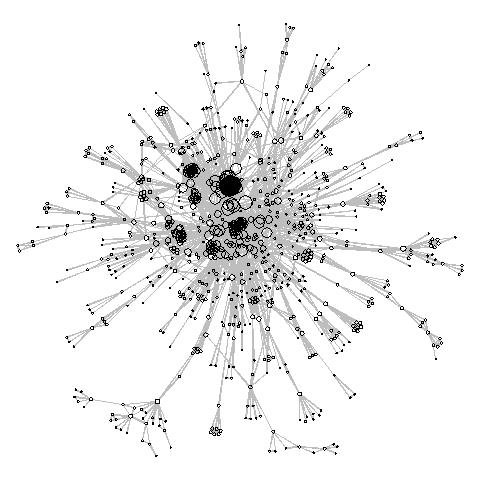
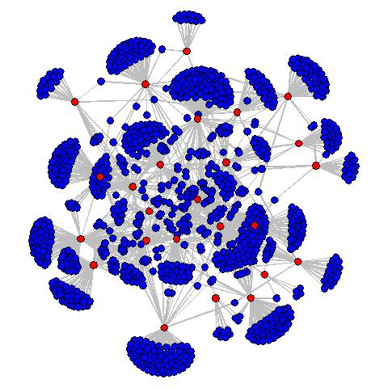
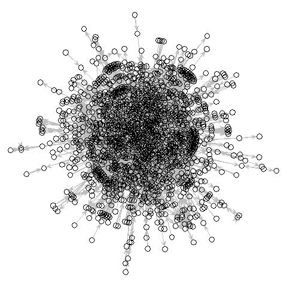
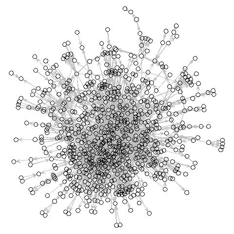
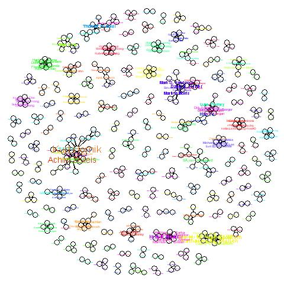

| Network plot | Description |
|  |
cran.authors: Network of CRAN package developers. Two developers are connected if they wrote a package together.
(Only largest component.)( Plotting code |
|  |
taskviews: Network of packages (blue) and tasks (red) as mentionned in
Task Views
A package and a task are connected if the package was mentionned in a task. Plotting code |
|  |
cran.depends: Network of packages that depend on each-other. (Random color selection. Only largest component.) Plotting code |
|  |
cran.suggests: Network of packages that suggest each-other. (Random color selection. Only largest component.) Plotting code |
|  |
jss: Network of authors who published an article in the Journal of Statistical Software.
Two authors are connected if they wrote at least one article together.
(Isolates omitted. Random color selection.) Plotting code |